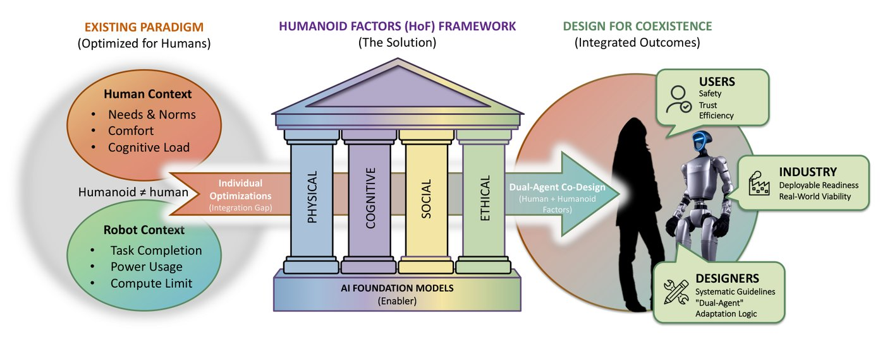

Humanoid Factors: Design Principles for AI Humanoids in Human Worlds
Abridged version, “Cognitive Models as Evaluation Primitives in Humanoid Factors,” at the ICLR 2026 Workshop on From Human Cognition to AI Reasoning.

Abstract
Human factors research has long focused on optimizing environments, tools, and systems to account for human performance. Yet, as humanoid robots begin to share our workplaces, homes, and public spaces, the design challenge expands. We must now consider not only factors for humans but also factors for humanoids, since both will co-exist and interact within the same environments. Unlike conventional machines, humanoids introduce expectations of human-like behavior, communication, and social presence, which reshape usability, trust, and safety considerations. In this article, we introduce the concept of humanoid factors as a framework structured around four pillars—physical, cognitive, social, and ethical—that shape the development of humanoids to help them effectively coexist and collaborate with humans. This framework characterizes the overlap and divergence between human capabilities and those of general-purpose humanoids powered by AI foundation models. To demonstrate our framework's practical utility, we then apply the framework to evaluate a real-world humanoid control algorithm, illustrating how conventional task completion metrics in robotics overlook key human cognitive and interaction principles. We thus position humanoid factors as a foundational framework for designing, evaluating, and governing sustained human–humanoid coexistence.
BibTeX
@article{liu2026humanoid,
title={Humanoid Factors: Design Principles for {AI} Humanoids in Human Worlds},
author={Liu, Xinyuan and Sadikoglu, Eren and Senanayake, Ransalu and Huang, Lixiao},
journal={arXiv preprint arXiv:2602.10069},
year={2026}
}